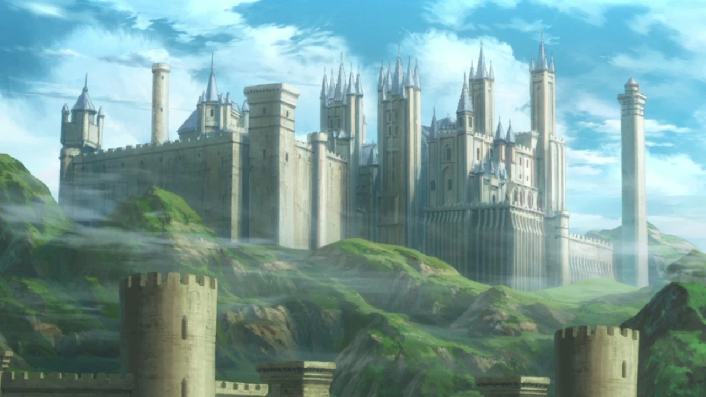
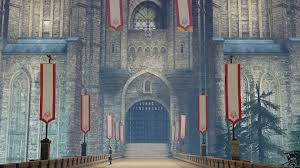
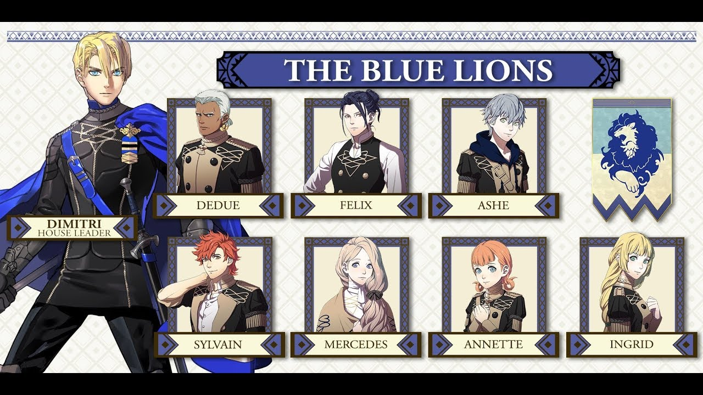
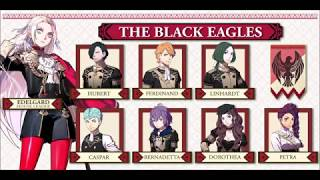
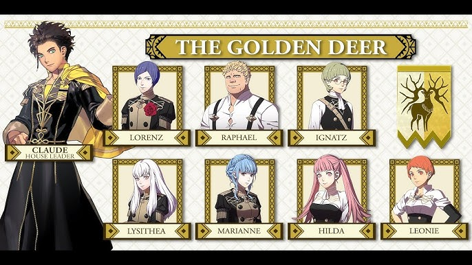
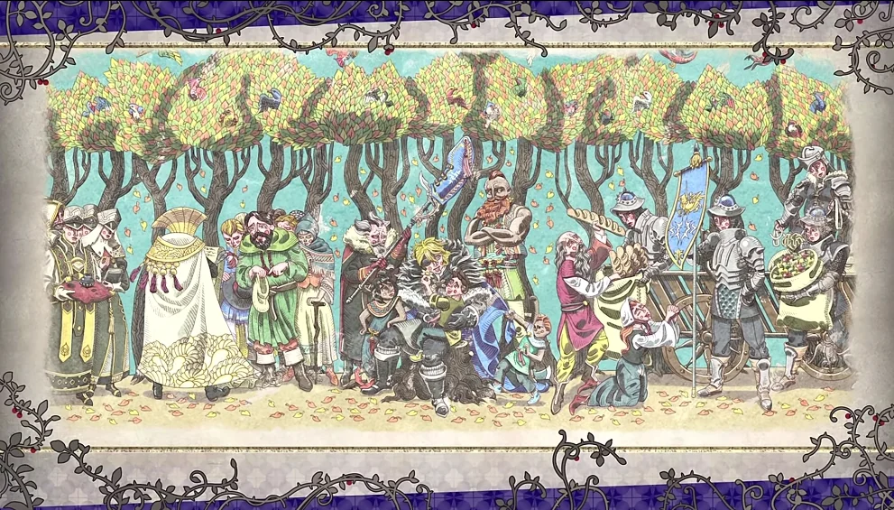
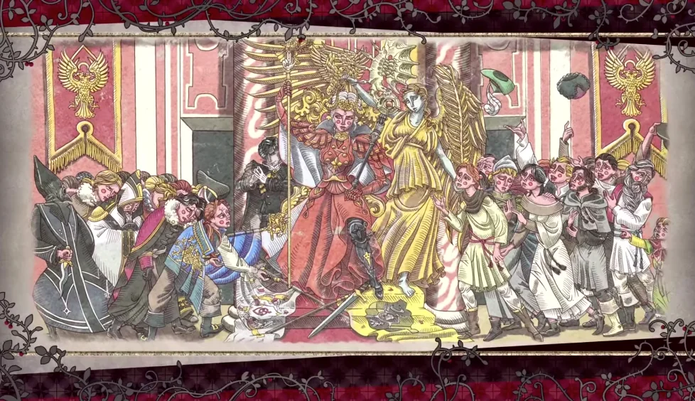
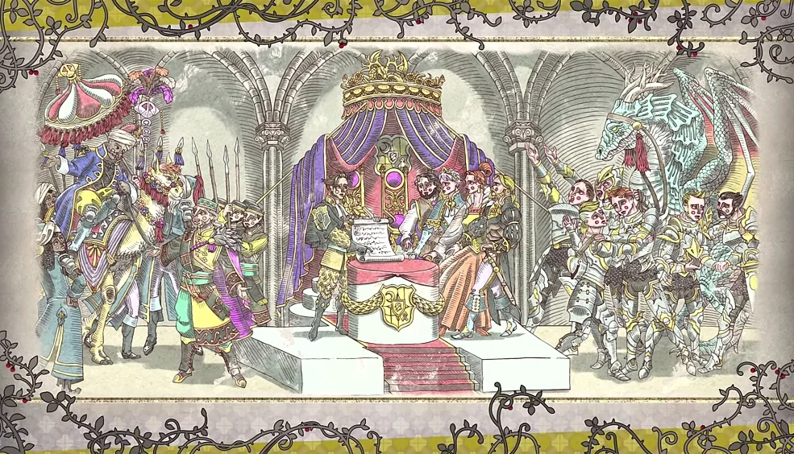

Fire Emblem Three Houses es un videojuego desarrollado por Nintendo en el año 2019 para la consola Nintendo Switch el cual es una novela digital y ambientada en la edad media, este videojuego trata acerca del drama que se puede vivir en una epoca media-renacentista con el aspecto politico, osea por los lideres de esa epoca.
El rol del jugador en el juego es el de un mercenario llamado Byleth que junto con su padre Jeralt ayudan a unos estudiantes que realmente son los herederos al trono de sus respectivas casas, a escapar de unos bandidos y regresar al monasterio de Garreg Mach. ya al estar en el monasterio los arzobispos nos agradecen por la accion y le proponen a Byleth ser profesor de una de las tres casas de la academia de oficiales.
 
Solo hay 3 casas por lo tanto debemos escoger una de esas 3, obviamente cada casa tiene un monarca el cual debemos guiar junto con sus vasallos para asi prepararlo para su puesto de majestad. Cabe resaltar que cada casa tiene un nombre diferente.
Estas son:
Los leones azules: Esta casa esta liderada por Dimitri, el futuro rey del sacro reino de Faerghus.

Las aguilas negras: Esta casa esta liderada por Edelgard, la futura emperatriz del imperio de Adrestia.

Los ciervos dorados: Esta casa esta liderada por Claude, el futuro archiduque de la union de Leicester

Conforme avances en la historia el desarrollo de cada personaje va a aumentar dando lugar a que Byleth al final del juego, pueda casarse con el personaje que mas haya interactuado con este.
Cada final de las tres rutas es diferente ya que en cada una mueren distintos personajes, o en otras sobreviven esos mismos personajes que en otra ruta murieron, otro detalle es que los finales de cada ruta tienen un resultado distinto al de la otra casa que escogiste, en el final de los leones azules, el continente de Fodlan se unifica en una sola nacion, en el final de las aguilas negras se expande todo el imperio hasta eliminar a la iglesia y la injusta jerarquia de emblemas y el final de los siervos dorados se fortalecen las uniones politicas de los demas continentes y se elimina el racismo.
  
En fin, para mi y los demas fans, este juego nos atrapo con sus apartados artisticos y musicales y por la profundidad que puede alcanzar esta historia, sus personajes si se sienten ahi, osea si se sienten vivos porque en las batallas cada uno de ellos necesita un apoyo especifico y asi que pueda subir de nivel, el unico contra que le veo es que hay usos limitados en las armas lo que te obliga a comprar constantemente en las tiendas del monasterio y la amplia disminucion del poder de las reliquias de los heroes. De cualquier modo este juego si que es bastante bueno en su narrativa y en su apartado cronologico.